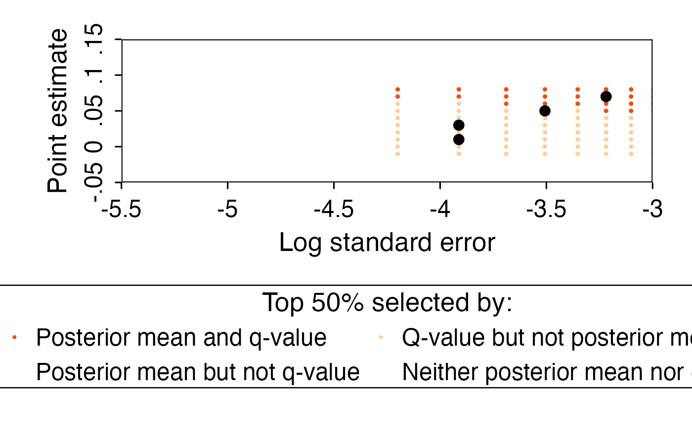

Plot a companion-style decision frontier
Source:R/plot-decision-frontier.R
plot_decision_frontier.RdDraws the Walters (2024) companion Figure 04-03 decision frontier comparing 20 percent selection rules based on posterior means and q-values. The plot colors a grid of hypothetical \((\hat\theta, s)\) pairs by which rule(s) select them and overlays the observed firms in black.
Usage
plot_decision_frontier(
observed,
grid,
classification = NULL,
lambda = 0.5,
selection_share = 0.2,
characteristic,
surface_size = 1.6,
observed_size = 4,
target_id = NULL,
source_receipt = NULL,
validation_mode = c("strict", "exploratory", "none")
)Arguments
- observed
Observed posterior data frame or
eb_posterior/eb_fitobject. Companionposteriors_white.csvimports are accepted.- grid
Posterior decision-surface grid data frame. Companion
posterior_grid_white.csvimports andeb_posterior_grid()-style columns are accepted.- classification
Optional
eb_classification-like object containingp_values,q_values, andpi0. If supplied, it must be upper-tail and aligned withobservedrows.- lambda
Storey threshold used when
classificationis not supplied. Default0.50.Matched selection share for both rules. Default
0.20.- characteristic
Length-one label for the empirical characteristic, such as
"white".- surface_size
Point size for grid/surface points.
- observed_size
Point size for observed firm points.
- target_id
Optional internal replication target identifier.
- source_receipt
Optional companion parity source receipt. In strict mode, protected companion targets such as
decision_frontiermust provide the matching receipt so the full grid size and Storey conventions are checked.- validation_mode
Target validation mode. The default
"strict"requires receipts for protected companion targets,"exploratory"checks target metadata when possible without requiring a receipt, and"none"disables target validation.
Value
A ggplot object. The internal eb_figure_data object used to
build the plot is stored in attr(plot, "eb_figure_data"); the companion
Figure 04-03 render contract is stored in attr(plot, "eb_render_spec").
Details
The companion frontier is plotted with log standard errors on the x-axis and
point estimates on the y-axis. The q-value grid is built by mapping each grid
p-value to the empirical CDF of observed p-values, then applying the same
top-share q-value cutoff as the observed firms. When classification is not
supplied, the internal figure-data helper uses the full-precision Storey
ratio for the frontier, matching the Stata script's local pi_0.
Exact Lane A companion examples require both target_id and
source_receipt so the helper can validate source assets, full-grid row
counts, and Storey conventions. Live workflow frontiers should omit
protected target IDs. See vignette("visualization", package = "ebrecipe")
for receipt-backed examples.
Examples
# \donttest{
if (requireNamespace("ggplot2", quietly = TRUE)) {
observed <- data.frame(
theta_hat = c(0.01, 0.03, 0.05, 0.07),
s = c(0.02, 0.02, 0.03, 0.04),
theta_star = c(0.015, 0.028, 0.045, 0.055),
firm_id = letters[1:4]
)
grid <- expand.grid(
theta_hat = seq(-0.01, 0.08, by = 0.01),
s = seq(0.015, 0.05, length.out = 8)
)
grid$theta_star <- 0.6 * grid$theta_hat + 0.4 * pmax(grid$s, 0)
grid$theta_star_lin <- 0.5 * grid$theta_hat + 0.5 * pmax(grid$s, 0)
grid$theta_star_lin_alt <- 0.7 * grid$theta_hat + 0.3 * pmax(grid$s, 0)
grid$p_value <- stats::pnorm(-(grid$theta_hat / grid$s))
plot_decision_frontier(
observed,
grid,
characteristic = "white",
selection_share = 0.50
)
}

# }